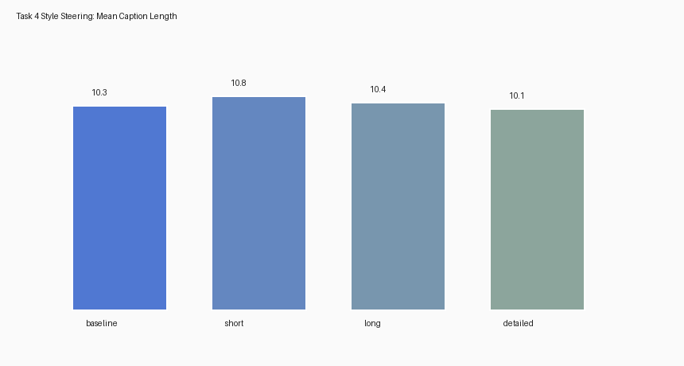

What this task does
1) Diversity via nucleus sampling
Uses nucleus sampling with top_p=0.9 to generate multiple captions per image.
2) Diversity metrics
Computes unique ngrams / total ngrams to quantify repetition vs novelty.
3) Learn concept directions
From hidden-state means it learns steering directions: short → long and short → detailed.
4) Steer hidden states during decoding
Applies h_steered = h + λ * direction to bias generation towards the chosen style.
Folder layout
tasks/task4_style_steering/
artifacts/
captions/diversity_captions.jsonl
steering/dir_short_to_*.npy
results/
reports/
steering_outputs.csv
style_steering_summary.md / style_steering_summary.json
figures/style_length_shift.pngHow to run
python -m tasks.task4_style_steering.run_style_steering \
--checkpoint_dir tasks/task1_blip_optimization/checkpoints/blip_gc_mp_224 \
--annotation_path src/data/raw/captions_validation.jsonl \
--image_dir src/data/raw/val2017 \
--style_annotation_path src/data/processed/subset_10k.jsonl \
--style_image_dir src/data/raw/train2017 \
--num_images 200 \
--num_steer_images 80 \
--num_captions_per_image 5 \
--top_p 0.9 \
--device cpuKey outputs
tasks/task4_style_steering/artifacts/captions/diversity_captions.jsonltasks/task4_style_steering/artifacts/steering/dir_short_to_*.npytasks/task4_style_steering/results/reports/steering_outputs.csvtasks/task4_style_steering/results/reports/style_steering_summary.md+.jsontasks/task4_style_steering/results/figures/style_length_shift.png
Observed results (current run)
Diversity
Mean caption diversity (unique ngrams / total ngrams): 0.7373
Mean pre-beam hidden-state diversity: 0.8460
Style shift (mean caption length)
Baseline: 10.275
Steered Short: 10.7875
Steered Long: 10.45
Steered Detailed: 10.1125

Length shift plot (baseline vs steered generations)
Keyword proxy: diverse vs repetitive image types
The task uses a lightweight keyword-frequency proxy to illustrate which categories appear more or less frequently across low- vs high-diversity outputs.
| Low-diversity keywords | High-diversity keywords |
|---|---|
| man (38), sitting (21), standing (20), group (15), people (11), table (10), holding (10), dog (10), cake (9), next (8), field (8), person (8) | two (20), sitting (13), man (10), table (9), front (8), standing (8), young (8), dog (7), people (7), next (6), three (6), holding (5) |
Interpretation
- If steered-long > baseline > steered-short, the steering direction is behaving as intended.
- Detailed steering should increase descriptive tokens and relational phrasing.